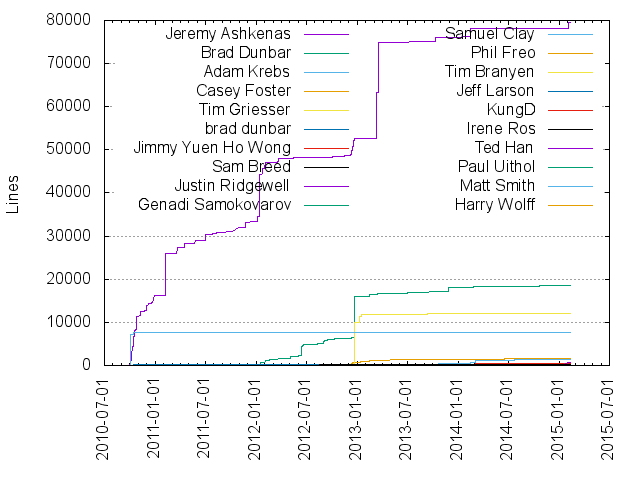
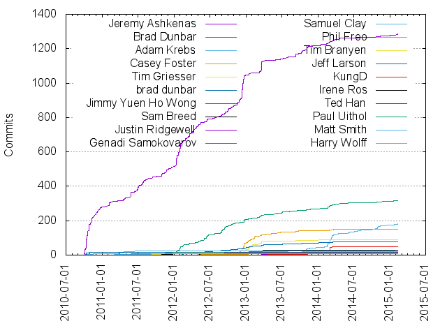

Authors
| Author | Commits (%) | + lines | - lines | First commit | Last commit | Age | Active days | # by commits |
|---|
| Jeremy Ashkenas | 1285 (46.16%) | 79459 | 67271 | 2010-09-30 | 2015-02-10 | 1593 days, 18:59:15 | 354 | 1 |
| Brad Dunbar | 318 (11.42%) | 18551 | 16298 | 2011-10-31 | 2015-02-05 | 1193 days, 0:22:27 | 186 | 2 |
| Adam Krebs | 181 (6.50%) | 1446 | 1078 | 2012-11-27 | 2015-02-12 | 807 days, 1:39:11 | 87 | 3 |
| Casey Foster | 151 (5.42%) | 1589 | 1075 | 2012-05-23 | 2014-04-23 | 700 days, 3:00:08 | 79 | 4 |
| Tim Griesser | 91 (3.27%) | 12100 | 11496 | 2012-09-30 | 2015-01-23 | 844 days, 15:11:04 | 55 | 5 |
| brad dunbar | 78 (2.80%) | 1 | 1 | 2012-01-30 | 2014-06-25 | 876 days, 18:18:22 | 70 | 6 |
| Jimmy Yuen Ho Wong | 47 (1.69%) | 429 | 360 | 2012-12-17 | 2014-03-14 | 451 days, 15:55:25 | 14 | 7 |
| Sam Breed | 29 (1.04%) | 282 | 189 | 2011-11-08 | 2014-07-24 | 988 days, 19:04:57 | 23 | 8 |
| Justin Ridgewell | 28 (1.01%) | 655 | 474 | 2014-10-29 | 2015-01-29 | 92 days, 11:40:46 | 11 | 9 |
| Genadi Samokovarov | 25 (0.90%) | 250 | 154 | 2012-05-01 | 2013-06-13 | 407 days, 22:27:44 | 20 | 10 |
| Samuel Clay | 24 (0.86%) | 7734 | 26 | 2010-10-04 | 2011-06-20 | 259 days, 6:50:27 | 12 | 11 |
| Phil Freo | 19 (0.68%) | 112 | 53 | 2012-04-19 | 2013-10-11 | 540 days, 0:09:33 | 12 | 12 |
| Tim Branyen | 15 (0.54%) | 8 | 8 | 2011-07-21 | 2012-12-26 | 523 days, 16:07:39 | 11 | 13 |
| Jeff Larson | 15 (0.54%) | 216 | 194 | 2010-10-07 | 2010-10-25 | 17 days, 21:54:11 | 5 | 14 |
| KungD | 13 (0.47%) | 146 | 91 | 2012-08-26 | 2013-01-27 | 153 days, 20:51:46 | 8 | 15 |
| Irene Ros | 10 (0.36%) | 156 | 52 | 2011-10-29 | 2012-08-16 | 292 days, 5:39:54 | 4 | 16 |
| Ted Han | 9 (0.32%) | 8 | 2 | 2012-02-11 | 2013-11-22 | 650 days, 7:47:17 | 6 | 17 |
| Paul Uithol | 9 (0.32%) | 72 | 52 | 2011-03-22 | 2011-05-26 | 65 days, 3:07:08 | 4 | 18 |
| Matt Smith | 8 (0.29%) | 71 | 28 | 2011-03-03 | 2011-09-11 | 191 days, 17:11:12 | 3 | 19 |
| Harry Wolff | 7 (0.25%) | 113 | 62 | 2012-02-17 | 2013-01-12 | 330 days, 0:30:12 | 5 | 20 |
These didn't make it to the top: Derick Bailey, Sam Stephenson, Joe Germuska, Ryan Mohr, Graeme Yeates, Dmytro Nemoga, Andrew Terris, Andrew Schaaf, vlad, Paul Miller, Nick Fitzgerald, Jason Morrison, Janas Page, Irina Dumitrascu, Alex Graul, Adriaan Labuschagne, eastbayjake, bodokaiser, Zack Owens, Tomasz Żyźniewski, Tomasz Tunik, Raimonds Simanovskis, Peter Pistorius, Ore Landau, Luke Rodgers, Loren Sands-Ramshaw, Johannes, Jerome Gravel-Niquet, Jason Punyon, Jason Davies, Jamie Rolfs, James Hartig, James Campos, JD Isaacks, Hans Oksendahl, Diego Tres, Dave Tonge, Christopher Wright, =, tbranyen, robrobbins, j03w, douglascalhoun, blissdev, Yuku Takahashi, Tim Harper, Steve Mason, Sergey Mezentsev, Rune Skjoldborg Madsen, Robert Gieseke, Raymond Julin, Pavel Karoukin, Pablo A. Torres Navarrete, Otto Allmendinger, Oleg Seletsky, Nicklas Ansman Giertz, Nick Stefan, Nadav, Max Kostow, Matt, Magnus Holm, Les Hill, Keith Cirkel, Joshua Peek, John Wright, Jmeas, Jaynti Kanani, James Sanders, Jake Harding, Jacek Becela, Ian Storm Taylor, Henrik Joreteg, Harry Shoff, Hadrien Milano, Graeme, Gavin Huang, Evan Morikawa, Elijah Insua, Edil Kratskih, David Lee, Chris Korhonen, Chris Baynes, Brian Erickson, Brennan Moore, Brandon Leonardo, Ben Orenstein, Austen Talbot, Asan Usipov, Andrew Ivaskevych, Andrae Muys, Aidan Feldman, threepointone, smelnikov, shidel.dev, rjz, mindscratch, michalkot, lifesinger, lennym, kupriyanenko, kpdecker, kalafut, jtwb, jrburke, ganmor, fancyoung, dxgriffiths, braddunbar, alexanderGugel, admangum, addyosmani, Zach Pomerantz, Yousef Cisco, Y Kang, Wu Zhe, William Humphreys-Cloutier, Will Moffat, Vladimir Dronnikov, Ville Lautanala, Tristan McCann, TrisMcC, Tomas Casas, Tomas Carnecky, Tom Bell, Tobias Sargeant, Tim Ruffles, Tiago Ribeiro, TMaYaD, Sunki Baek, Steve Craig, Stephen Thomas, Stepan Tubanov, Stan Angeloff, Simon Fishel, Schlaefer, Samuel Vogel, Ryan Eastridge, Roma Matusevich, Robert Hencke, Raúl Naveiras, Raphael Sofaer, Radoslav Stankov, Peter Rust, PatrickJS, Patrick Kettner, Pablo Alonso García, Oli, Ofer Nave, Nikolay Bachiyski, Niels Sandholt Busch, Nick Gauthier, Nicholas Masters, Niall Smart, Neeraj Singh, Nayan Hajratwala, Nathan Wells, Nate Hunzaker, Morgan 'ARR\!' Allen, Mitchell Cowie, Mikhail Korobov, Mickey Reiss, Michał Łowicki, Michael Yong, Matt Todd, Matt Hartzler, Marat Dreizin, Maksim Horbachevsky, Luke Lee, Lee Leathers, Kyle Chaplin, Kris Jordan, Krawaller, Kim Joar Bekkelund, Kevin Perry, Kazuhito Hokamura, Karl Guertin, Justin, Julen Ruiz Aizpuru, Joss Crowcroft, Josh Vermaire, Josh Bassett, Jonathan Roes, Jonas Ingermaa, Jon Beebe, John-David Dalton, Johannes J. Schmidt, Jimmy Do, Jesse McCarthy, Jerome Lecomte, Jeremiah Orr, Jeff Carbonella, Jed Schmidt, Jean Boussier, James Coglan, Jacob Thornton, Jack Wearden, Hossein Bukhamsin, Henry Snopek, Harrison Shoff, Gmajoulet, Gianni Chiappetta, Félix Horro Pita, Félix, Fábio M. Costa, Francis Gulotta, Francis, Ferran Basora, Eric Wang, Elisa Oinonen, Duke, Douglas Neiner, Doug Neiner, Dmitry Baranovskiy, Dmitriy Fabrikant, DjebbZ, Dillon Forrest, Devin Hunt, David Murdoch, David Marble, David, Daniel Schildt, Damien Holzapfel, Daijiro Wachi, Corban Brook, Cole Krumbholz, Cole, Clay Walker, Christopher Pfohl, Chris Smith, Chris Schuhmann, Chris Pickett, Chris Moore, Chris Lloyd, Chris Davaz, Carl Danley, Camille Roussel, Bryan Goldstein, Brian Scoles, Brian Iversen, Brett Goulder, Bo-Yi Wu, Blake Embrey, Bjørn Arild Mæland, Benjen, Benjamin Atkin, Ben Atkin, Ben Alpert, Attila Györffy, Artur Adib, Arian Faurtosh, Andy Waite, Andy Locascio, Andrew Badr, Andrei Bocan, Alex Sharp, Alex McPherson, Alex Buck, Al Urim, Aitor Guevara Escalante, Aidan Feldman and Tim Harper, Adam George, Aaron Rutkovsky, Aaron Hamid, Aaron Franks
Only top 20 authors shown
Only top 20 authors shown
| Month | Author | Commits (%) | Next top 5 | Number of authors |
|---|
| 2015-02 | Jeremy Ashkenas | 5 (33.33% of 15) | Adam Krebs, Yousef Cisco, Stephen Thomas, Graeme, Camille Roussel | 8 |
| 2015-01 | Justin Ridgewell | 18 (52.94% of 34) | Brad Dunbar, Jeremy Ashkenas, Adam Krebs, Zach Pomerantz, Y Kang | 7 |
| 2014-12 | Jeremy Ashkenas | 3 (37.50% of 8) | Adam Krebs, Kevin Perry, Justin Ridgewell, Brian Scoles | 5 |
| 2014-11 | Adam Krebs | 7 (31.82% of 22) | Jeremy Ashkenas, Brad Dunbar, robrobbins, James Hartig, Roma Matusevich | 8 |
| 2014-10 | Adam Krebs | 16 (39.02% of 41) | Justin Ridgewell, Janas Page, Brad Dunbar, Jmeas, Jeremy Ashkenas | 11 |
| 2014-09 | Adam Krebs | 3 (23.08% of 13) | Nick Stefan, Jeremy Ashkenas, JD Isaacks, Andrew Ivaskevych, Gianni Chiappetta | 7 |
| 2014-08 | Jeremy Ashkenas | 2 (22.22% of 9) | Adam Krebs, Tomas Casas, Jack Wearden, JD Isaacks, Graeme Yeates | 7 |
| 2014-07 | Adam Krebs | 9 (52.94% of 17) | Oleg Seletsky, Austen Talbot, Sam Breed, Henry Snopek, Graeme Yeates | 7 |
| 2014-06 | Adam Krebs | 7 (38.89% of 18) | Brad Dunbar, brad dunbar, Jeremy Ashkenas, rjz, Julen Ruiz Aizpuru | 8 |
| 2014-05 | Brad Dunbar | 2 (40.00% of 5) | Adam Krebs, Jeremy Ashkenas | 3 |
| 2014-04 | Jeremy Ashkenas | 7 (33.33% of 21) | Adam Krebs, Brad Dunbar, Casey Foster, alexanderGugel, Tim Griesser | 7 |
| 2014-03 | Adam Krebs | 43 (44.79% of 96) | Jeremy Ashkenas, Brad Dunbar, Jimmy Yuen Ho Wong, Casey Foster, brad dunbar | 17 |
| 2014-02 | Adam Krebs | 32 (32.00% of 100) | Jimmy Yuen Ho Wong, Brad Dunbar, Jeremy Ashkenas, Casey Foster, brad dunbar | 12 |
| 2014-01 | Jeremy Ashkenas | 6 (42.86% of 14) | brad dunbar, Brad Dunbar, Adam Krebs, Tim Griesser, Elisa Oinonen | 6 |
| 2013-12 | Jeremy Ashkenas | 3 (23.08% of 13) | brad dunbar, Brad Dunbar, Adam Krebs, Tim Griesser, Nathan Wells | 8 |
| 2013-11 | Jeremy Ashkenas | 20 (34.48% of 58) | Adam Krebs, Brad Dunbar, Ryan Mohr, Jimmy Yuen Ho Wong, j03w | 16 |
| 2013-10 | Jeremy Ashkenas | 24 (61.54% of 39) | Adam Krebs, brad dunbar, Jaynti Kanani, Brad Dunbar, jtwb | 10 |
| 2013-09 | Jeremy Ashkenas | 20 (55.56% of 36) | Casey Foster, Tim Griesser, Brad Dunbar, Adam Krebs, vlad | 7 |
| 2013-08 | Brad Dunbar | 5 (29.41% of 17) | Casey Foster, douglascalhoun, Phil Freo, Jeremy Ashkenas, Ofer Nave | 8 |
| 2013-07 | Jeremy Ashkenas | 10 (35.71% of 28) | Brad Dunbar, brad dunbar, eastbayjake, Matt Hartzler, David | 7 |
| 2013-06 | Casey Foster | 7 (33.33% of 21) | Jeremy Ashkenas, Brad Dunbar, brad dunbar, Andrae Muys, Kim Joar Bekkelund | 8 |
| 2013-05 | Casey Foster | 4 (28.57% of 14) | Brad Dunbar, Tim Griesser, Jeremy Ashkenas, Tiago Ribeiro, Sam Breed | 7 |
| 2013-04 | Jeremy Ashkenas | 6 (30.00% of 20) | Brad Dunbar, Ted Han, Rune Skjoldborg Madsen, Casey Foster, brad dunbar | 9 |
| 2013-03 | Jeremy Ashkenas | 68 (45.64% of 149) | Tim Griesser, Brad Dunbar, Casey Foster, brad dunbar, Sam Breed | 21 |
| 2013-02 | Casey Foster | 18 (29.51% of 61) | Adam Krebs, Tim Griesser, Brad Dunbar, Sam Breed, brad dunbar | 15 |
| 2013-01 | Tim Griesser | 27 (23.08% of 117) | Casey Foster, Jeremy Ashkenas, Brad Dunbar, brad dunbar, Phil Freo | 24 |
| 2012-12 | Jeremy Ashkenas | 142 (52.01% of 273) | Casey Foster, Tim Griesser, Brad Dunbar, Genadi Samokovarov, Derick Bailey | 19 |
| 2012-11 | Jeremy Ashkenas | 36 (55.38% of 65) | Brad Dunbar, Casey Foster, Tim Griesser, brad dunbar, Brian Erickson | 11 |
| 2012-10 | Jeremy Ashkenas | 31 (41.33% of 75) | Brad Dunbar, Casey Foster, brad dunbar, Sam Breed, Tim Griesser | 14 |
| 2012-09 | Brad Dunbar | 24 (39.34% of 61) | Jeremy Ashkenas, KungD, brad dunbar, Tim Griesser, Josh Vermaire | 11 |
| 2012-08 | Brad Dunbar | 15 (31.25% of 48) | Jeremy Ashkenas, brad dunbar, KungD, James Campos, Irene Ros | 12 |
| 2012-07 | Jeremy Ashkenas | 9 (32.14% of 28) | Brad Dunbar, Jamie Rolfs, Chris Baynes, tbranyen, brad dunbar | 13 |
| 2012-06 | Brad Dunbar | 35 (45.45% of 77) | Jeremy Ashkenas, brad dunbar, Christopher Wright, Sam Breed, ganmor | 15 |
| 2012-05 | Jeremy Ashkenas | 23 (36.51% of 63) | Brad Dunbar, Sam Breed, Casey Foster, brad dunbar, Harry Wolff | 14 |
| 2012-04 | Jeremy Ashkenas | 39 (59.09% of 66) | Brad Dunbar, Andrew Terris, Phil Freo, Paul Miller, Nicklas Ansman Giertz | 15 |
| 2012-03 | Jeremy Ashkenas | 35 (57.38% of 61) | Brad Dunbar, Irina Dumitrascu, brad dunbar, Harry Shoff, Ben Orenstein | 15 |
| 2012-02 | Jeremy Ashkenas | 57 (54.81% of 104) | Brad Dunbar, brad dunbar, Peter Pistorius, Otto Allmendinger, Jake Harding | 17 |
| 2012-01 | Jeremy Ashkenas | 104 (70.27% of 148) | Brad Dunbar, Tomasz Tunik, Zack Owens, James Sanders, vlad | 15 |
| 2011-12 | Jeremy Ashkenas | 17 (50.00% of 34) | Tim Branyen, Irene Ros, =, Magnus Holm, Zack Owens | 11 |
| 2011-11 | Jeremy Ashkenas | 27 (55.10% of 49) | Brad Dunbar, Tim Harper, Tim Branyen, Tristan McCann, TMaYaD | 12 |
| 2011-10 | Jeremy Ashkenas | 16 (45.71% of 35) | Irene Ros, Alex Graul, Tim Branyen, Jason Morrison, Brad Dunbar | 8 |
| 2011-09 | Jeremy Ashkenas | 9 (56.25% of 16) | Les Hill, kpdecker, Tim Branyen, Robert Gieseke, Matt Smith | 7 |
| 2011-08 | Jeremy Ashkenas | 17 (70.83% of 24) | Steve Mason, tbranyen, TrisMcC, Tim Branyen, Jacob Thornton | 7 |
| 2011-07 | Jeremy Ashkenas | 49 (80.33% of 61) | Nadav, Wu Zhe, Tim Branyen, Raimonds Simanovskis, Neeraj Singh | 12 |
| 2011-06 | Jeremy Ashkenas | 14 (51.85% of 27) | Loren Sands-Ramshaw, Samuel Clay, Gavin Huang, threepointone, braddunbar | 10 |
| 2011-05 | Jeremy Ashkenas | 33 (84.62% of 39) | Paul Uithol, Matt Smith, Francis, Corban Brook | 5 |
| 2011-04 | Jeremy Ashkenas | 16 (44.44% of 36) | Samuel Clay, Paul Uithol, Pablo A. Torres Navarrete, Jacek Becela, Brandon Leonardo | 8 |
| 2011-03 | Matt Smith | 6 (26.09% of 23) | Samuel Clay, Jeremy Ashkenas, Paul Uithol, Jason Davies, Jimmy Do | 7 |
| 2011-02 | Jeremy Ashkenas | 26 (89.66% of 29) | Raimonds Simanovskis, Kris Jordan, Jed Schmidt | 4 |
| 2011-01 | Jeremy Ashkenas | 7 (53.85% of 13) | Pavel Karoukin, Samuel Clay, Joshua Peek, Johannes J. Schmidt, Andrew Badr | 6 |
| 2010-12 | Jeremy Ashkenas | 41 (82.00% of 50) | Sam Stephenson, Matt Todd, Matt, Joshua Peek, Chris Korhonen | 6 |
| 2010-11 | Jeremy Ashkenas | 61 (87.14% of 70) | dxgriffiths, Will Moffat, Samuel Clay, Sam Stephenson, Raimonds Simanovskis | 10 |
| 2010-10 | Jeremy Ashkenas | 176 (79.28% of 222) | Jeff Larson, Samuel Clay, Joe Germuska, Andrew Schaaf, Nick Fitzgerald | 12 |
| 2010-09 | Jeremy Ashkenas | 1 (100.00% of 1) | | 1 |
| Year | Author | Commits (%) | Next top 5 | Number of authors |
|---|
| 2015 | Justin Ridgewell | 18 (36.73% of 49) | Jeremy Ashkenas, Adam Krebs, Brad Dunbar, Zach Pomerantz, Yousef Cisco | 12 |
| 2014 | Adam Krebs | 130 (35.71% of 364) | Jeremy Ashkenas, Brad Dunbar, Jimmy Yuen Ho Wong, Justin Ridgewell, Casey Foster | 53 |
| 2013 | Jeremy Ashkenas | 173 (30.19% of 573) | Casey Foster, Brad Dunbar, Tim Griesser, Adam Krebs, brad dunbar | 74 |
| 2012 | Jeremy Ashkenas | 530 (49.58% of 1069) | Brad Dunbar, Casey Foster, brad dunbar, Tim Griesser, Sam Breed | 103 |
| 2011 | Jeremy Ashkenas | 236 (61.14% of 386) | Samuel Clay, Brad Dunbar, Tim Branyen, Paul Uithol, Matt Smith | 67 |
| 2010 | Jeremy Ashkenas | 279 (81.34% of 343) | Jeff Larson, Samuel Clay, Sam Stephenson, Joe Germuska, Andrew Schaaf | 23 |
| Domains | Total (%) |
|---|
| gmail.com | 2148 (77.16%) |
|---|
| cs.nyu.edu | 161 (5.78%) |
|---|
| sey.me | 134 (4.81%) |
|---|
| quickleft.com | 30 (1.08%) |
|---|
| ridgewell.name | 28 (1.01%) |
|---|
| ofbrooklyn.com | 24 (0.86%) |
|---|
| philfreo.com | 19 (0.68%) |
|---|
| tabdeveloper.com | 17 (0.61%) |
|---|
| caseywebdev.com | 17 (0.61%) |
|---|
| krawaller.se | 14 (0.50%) |
|---|